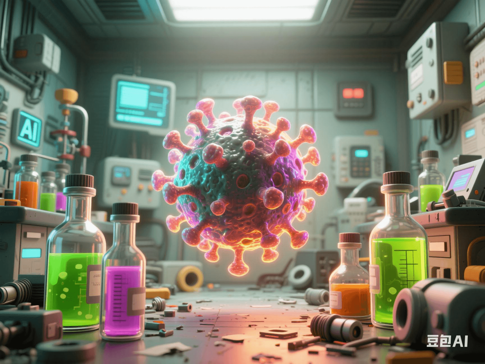

Can AI Design Super Viruses? The Risk of Lab Leaks Keeps Scientists Awake at Night
PeaceLove.Top Insights :2025-04-19
28 Can AI Design Super Viruses? The Risk of Lab Leaks Keeps Scientists Awake at Night 🧬💻
🧬 AI and Biological Weapons: The Birth of Super Viruses?
With the rapid development of artificial intelligence technology, it has not only changed all aspects of our lives but also raised serious concerns in the scientific community about the risks of its abuse. Recently, the discussion about AI designing super viruses has become a hot topic, especially when the risk of leaks from biological laboratories is constantly being exposed. 🔬 Scientists use AI to simulate various reactions of organisms and develop more precise disease-treatment methods. However, the potential for AI to be misused is also increasing. Especially in the field of virus design, AI is used to accelerate gene editing, virus mutation, and research on biological weapons. If these technologies fall into the hands of criminals, it may lead to the birth of super viruses, threatening global public safety. 🦠🌍
💻 AI Abuse: The 'Double-Edged Sword' of Technology
In the laboratory, AI can not only help scientists analyze data more efficiently, design drugs, and even explore unknown gene mutations. It can simulate how viruses infect hosts, how they spread in different environments, and predict future mutation situations. However, when these powerful functions of AI are misused, the results can be catastrophic. 😨 Scientists warn that if AI technology is maliciously used to design biological weapons, it may trigger an uncontrollable global epidemic. Especially in the context of the continuous progress of gene-editing technology, the actions and decisions of scientists and technicians will directly affect the risk of global biological safety. 🔓💉
🏚️ The Risk of Lab Leaks: A Safety Hazard
In addition to the potential threats brought by AI abuse, lab leaks have always been a major hidden danger in the field of biological safety. In the past few years, there have been multiple accidental leak incidents in biological laboratories around the world, greatly increasing the possibility of the spread of dangerous viruses. 🚨 Whether it is human error or technical loopholes, lab leak accidents have attracted wide global attention. While AI accelerates virus research and production, it also makes these viruses more hidden and difficult to predict, increasing the difficulty of leakage and spread. 🦠🔬
⚠️ Ethics and Supervision: The Moral Dilemma of Technological Progress
As AI is more widely used in biological sciences, how to supervise these technologies has become a tricky problem. Although scientists generally recognize the potential of AI in promoting biomedical and virus research, they also realize the risks of misusing technology. For example, some countries or organizations may try to use these technologies to create biological weapons targeting specific groups or countries. 🤔 Therefore, the construction of biological safety and ethical review systems has become particularly important. How to ensure that the use of AI technology does not cross the moral bottom line and how to establish an effective international supervision mechanism are all difficult problems we have to face. ⚖️
🌐 Global Cooperation and Countermeasures
To deal with the risks of AI abuse and biological lab leaks, the international community needs to strengthen cooperation to ensure global biological safety. Governments, international organizations, and research institutions of all countries should jointly formulate strict biological safety regulations, strengthen laboratory management and the transparency of virus research, and prevent technology from falling into the wrong hands. 🌍🤝 At the same time, the public should also raise awareness of biological safety and AI ethical issues and supervise the development of technology to ensure it does not deviate from the track of safety and morality. By establishing a global scientific and ethical framework and a sharing platform, necessary guarantees can be provided for technological progress while avoiding its unpredictable risks. 🛑
🔍 Conclusion: The Game Between Technology and Safety
The application of AI in virus research and gene editing not only brings new treatment hopes to humanity but also brings unprecedented risks. 🧬 Facing this double-edged sword, the global scientific community, ethicists, and government agencies need to work together to strengthen the supervision of AI technology to ensure that technology does not pose a threat to global public safety while improving human well-being. Only after establishing a strict scientific and ethical and safety guarantee system can we truly enjoy the benefits brought by AI without being swallowed by the potential dangers it may bring. 🌍🔐 In the future, how to balance technological innovation and risk management will be a major issue we all face.